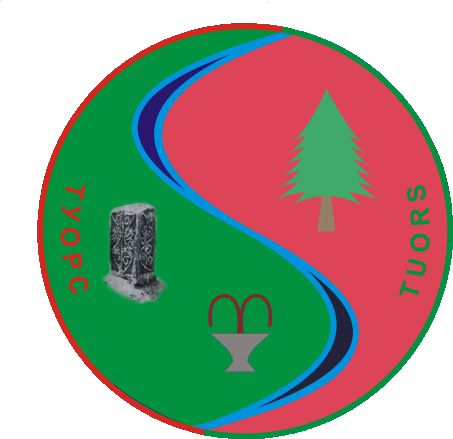

Turistička organizacija
"Turistička organizacija Srebrenica je neprofitna javna ustanova osnovana od strane Skupštine opštine Srebrenica 2005. godine. Djeluje na području opštine Srebrenica, s ciljem stvaranja povoljnijih uslova za razvoj turizma. Osnovna djelatnost Turističke organizacije je promocija i doprinos uspješnijem poslovanju privrede na lokalnom nivou."
Srebreničkog odreda bb
75 430 Srebrenica
mail: tours_srebrenica@yahoo.com
tel: 056 440-072
web: tours-srebrenica.ba
Kulturno-historijska obilježja
Srebrenički stećci
Kada je riječ o broju stećaka na području općine Srebrenica Turistička organizacija Srebrenica u saradnji s Muzejskom zbirkom Narodne biblioteke Srebrenica 2010. i 2011. godine radila je istraživanje o brojnosti stećaka na području općine Srebrenica i tom prilikom evidentirano je 50 nekropola stećaka koje broje između 950 i hiljadu stećaka. Stećke možete pronaći na mnogim mjestima u Srebrenici pa tako i u centru grada kod katoličke crkve svete Marije, a neka od sela u kojima su najzastupljeniji stećci su Bektići i Šušnjari.
Arheološko nalazište
Stanovnici naselja Skelani na obali rijeke Drine u opštini Srebrenica nisu ni sanjali da je tu u II vijeku n. e., punim sjajem blistao - Municipium malvesiatium, značajan rimski administrativni centar ove regije. Veličanstveni mozaici, skulpture i antički spomenici zaboravljenog grada sa imperatorskom palatom u centru, očima radoznalaca ukazuju se po prvi put prije 120 godina kada je svoja istraživanja započeo Karlo Pač, austrougarski istoričar. On je pronašao rimsku nekropolu i kasnoantičko groblje sa dvije ranohrišćanske bazilike. Svoja otkrića Pač je evidentirao, napravio je tlocrt municipijuma, iscrtao spomenike i kompletno istraživanje objavio u Zemaljskom glasniku muzeja Bosne. Međutim, iste godine, desila se velika poplava i područje sa rimskim bazilikama prekrila su dva metra debeli nanosi riječnog mulja i šljunka. Prošlo je od tada 112 godina, dok 2008. godine arheolog, mr. Mirko Babić, nije doživio ono što sanja svaki arheolog: pronašao je ove spomenike. Mozaici su sada prekriveni nekom vrstom plastenika kako bi se zastitili od kiše i nevremena a pri tome bili dostupni posjetiocima.
Dervišagića kuća
Dervišagića kuća je nacionalni spomenik Bosne i Hercegovine. Nalazi se u mahali Crvena rijeka u Srebrenici. Kuća potiče iz 19. vijeka i predstavlja jedini sačuvani primjer gradske kuće u Srebrenici iz Osmanskog perioda vladavine.Tokom 20. veka, kuću je kupio Rasim Travničanin, sin Derviš-age Travničanina i od tada kuća postaje poznata pod nazivom Dervišagića kuća. Dervišagića kuća se nalazi u blizini Harem džamije u mahali Crvena rijeka u sjevernoistočnom dijelu Srebrenice. U vrijeme izgradnje kuće, mahala je imala oko 25 kuća, džamiju i mekteb. Prvobitni naziv mahale bio je Guber ili Crni Guber. Kuća je služila za stanovanje sve do početka oružanih sukoba u Bosni i Hercegovini devedesetih godina dvadesetog vijeka.

Džamija u Slapovićima
Džamija u Slapovićima se nalazi u naseljenom području Slapovići – Bučje, udaljenom oko 4,5 km jugozapadno od Srebrenice. Izgrađena je 1936. godine od strane Mula Selima Alemića. Jedina je džamija na području Srebrenice koja je nakon rekonstrukcije zadržala izvorni oblik. Historijska građevina džamija u Slapovićima 2010. godine proglašena je za nacionalni spomenik BiH.
Manastir Karno
Manastir Karno je manastir Srpske pravoslavne crkve. Nalazi se u selu Međe, Opština Srebrenica. Nedaleko od današnjeg hrama, na mjestu poznatom kao „Crkvina“ nalaze se ostaci stare srednjovjekovne crkve koja je srušena u vrijeme najezde Turaka. To mjesto danas je obilježeno Časnim Krstom. Hram je više puta stradao u svojoj istoriji. Najprije je ruinirani hram obnovio proto Tihomir Mitrović 1956. godine. U teškom nevremenu 1973. godine, hram je bio oštećen, a na obnovu čekao je do 1979. godine.
Manastir Svete Trojice
Manastir Svete Trojice, manastir Srpske pravoslavne crkve, nalazi se u Sasama, općina Srebrenica, entitet Republika Srpska, Bosna i Hercegovina. Smješten je u neposrednoj blizini antičkog lokaliteta Domavija. Manastir je sagrađen 1242. godine i bio je metoh/imanje manastira Hilandara. Gotovo 400 godina su temelji nekadašnjeg manastirskog hrama bili prekriveni naslagom zemlje, a i sam manastir je pao u zaborav. Tek 1858. godine saški rudari su otkopali manastirske temelje i na njima sagradili novu crkvu, koju su prema Đorđu Beatoviću posvetili svetom apostolu Petru. Temelji i zidovi crkve u Sasama iskopani su i obnovljeni 1850. godine.
Stari grad Klotjevac
Smješten na strmoj stijeni iznad Drine. Pošto je većina srednjovjekovnih bosanskih gradova građena na uzvišenjima pa tako i ovaj grad imao je odbrambeni karakter. Imao je dobru preglednost tog dijela kanjona Drine. Činjenica da se samo 7 km nizvodno nalazi još jedna srednjovjekovna utvrda- srednjovjekovni grad Đurđevac, pokazuje istorijsku važnost ovog kraja. Nekropole stećaka „razasute" u tom području opštine Srebrenica a koje gravitiraju u okolini Klotjevačkog grada kao što su: Mramorje kod sela Ljeskovik, Zaelisije, Urisići, Lubničko brdo i druga pokazuju kontinuitet življenja odavnina na ovim prostorima.
Atrakcije
Guber-voda
Voda sa vrela Crni Guber 1956. godine proglašena je lijekom. Guber voda sadrži tokove Očne vode, Crnog Gubera, Ljepotice, Sinus vode, Malog gubera, Kožne vode i nekoliko drugih od 48 različitih izvora ljekovite mineralne vode. Danas ne postoji izgrađena banja ali posjetioci mogu da priđu i koriste 6 različitih ljekovitih izvora. Banja Guber ima i druge prednosti, kao novo urađeno šetalište sa klupama i malim šadrvanima, mini teretanom, kafićem, i dječijim igralištem. Svako je dobrodošao da prošeta i odmori oči na predivnom zelenilu borove šume koja okružuje šetalište.

Jezero Perućac
Perućac je vještačko jezero u Bosni i Hercegovini i Srbiji kod mjesta Perućac. Nastalo je pregrađivanjem toka Drine, za potrebe hidroelektrane "Bajina Bašta". Akumulacija je dugačka 54 km i prostire se kroz kanjon do Višegrada. Obala i veći dio dna su kameniti. Sredina jezera je granica između Bosne i Hercegovine i Srbije. Jezero se nalazi u prirodnom zavoju kanjona rijeke Drine i obavija planinu Taru, mijenjajući smjer toka od sjevera prema jugoistoku. Na lijevoj strane nalazi Nacionalni park Drina. Jezero obiluje raznim vrstama ribe i pogodno je za sportski ribolov. Opuštajuća destinacija za odmor sa porodicom ili prijateljima. Možete uživati u turama kroz kanjon Drine ili jednostavno se sunčati na obali sa divnim pogledom na čistu tirkiznu boju jezera ili uživati u lokalnim specijalitetima u jednom od restorana na jezeru.
Kuća dobrih tonova
Osnovana je u Srebrenici 2011. godine. Kuća dobrih tonova je mjesto u kojem djeca i mladi iz regije Srebrenica imaju pristup kvalitetnim edukativnim, kulturnim i zabavnim sadržajima. To je kuća u kojoj se svi, bez obzira na etničku, socijalnu, religijsku i svaku drugu pripadnost, osjećaju dobro družeći se i dijeleći iskustvo, znanje i radost. Aktivnosti u kući dobrih tonova su raspoređene u šest programa – muzika, edukacija, community engagement, lifestyle, volontarizam, film i književnost. Svako može posjetiti ovu ustanovu i vidjeti njihov rad.
Memorijalni centar Srebrenica
Memorijalni centar Srebrenica - Potočari je memorijalni kompleks izgrađen u znak sjećanja na žrtve genocida nad Bošnjacima Srebrenice tokom rata u Bosni i Hercegovini. Centar je izgrađen u naselju Potočari u blizini Srebrenice a sastoji se od spomen obilježja i mezarja. Do jula 2012. godine, pomoću DNK analize posmrtnih ostataka žrtava iz različitih masovnih grobnica, identificirano je 6.838 žrtava genocida dok je 6.066 žrtava pokopano u ovom memorijalnom centru.